Chief Advisors
-
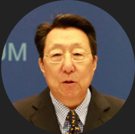
CHEN JIAN
Former Vice Secretary-General of the United Nations
Former President of U.N. Association of China -
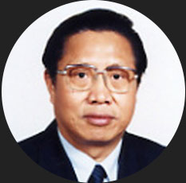
JI PEIDING
President of Association of Former Diplomats of China (AFDC)
Former Vice-Minister of China Ministry of Foreign Affairs -
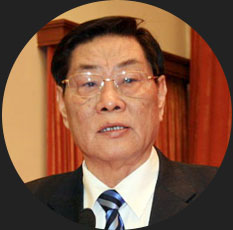
HE JIHAI
Honorary President of China General Chamber of Commerce
Former Vice-president of China Ministry of Commerce -
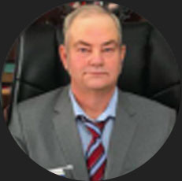
TETE WESTON
PRESIDENT OF US-CHINA GLOBAL
ECONOMIC ASSOCIATION -
MATTHEW BROWNDORF
FOUNDER/CEO OF PLUTOS SAMA MANAGING PARTER OF WKB LAW FIRM DISTINGUISHED MEMBER OF LAWYERS OF DISTINCTION -
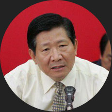
HOU YUNCHUN
President of China Enterprise Evaluation Association (CEEA)
Former Deputy Director of Development Research Center of the State Council -
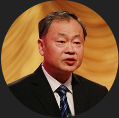
JIANG MING
President of China General Chamber of Commerce -
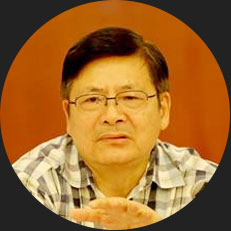
SUN WEILIN
President of China Association for Non-profit Organization (CANPO) -
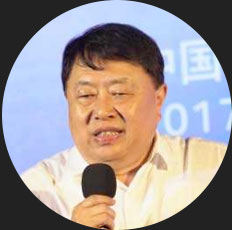
CONG YADONG
Executive Vice-President of China Information Industry Trade Association -
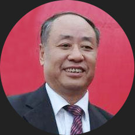
LIU YUCAI
President of Association of China Commercial Enterprise Management -
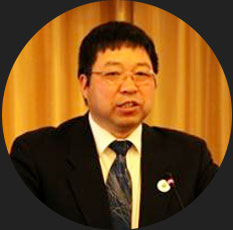
HUANG HAOMING
Director of China Association for NGO Cooperation -
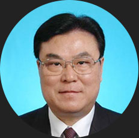
CUI MINGMO
President of China Association for International Economic Cooperation (CAFIEC) -
ZHOU SAIFENG
Director of China Foundation for the Development of Social Culture (CFDSC) -
WANG LIN
Director of China Charities Aid Foundation for Children -
LI BAOMIN
Executive president of Automobile and Motorcycle Business Association of All-China Federation of Industry and Commerce -
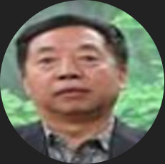
LV BAOMIN
President of Indonesia Papua in China Association for Business Promotion -
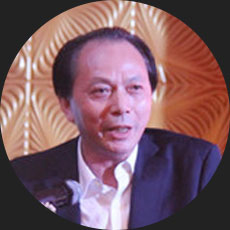
GU CHAOQING
President of Business Association of China in Vietnam